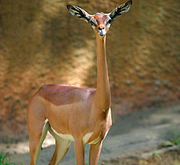
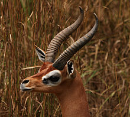
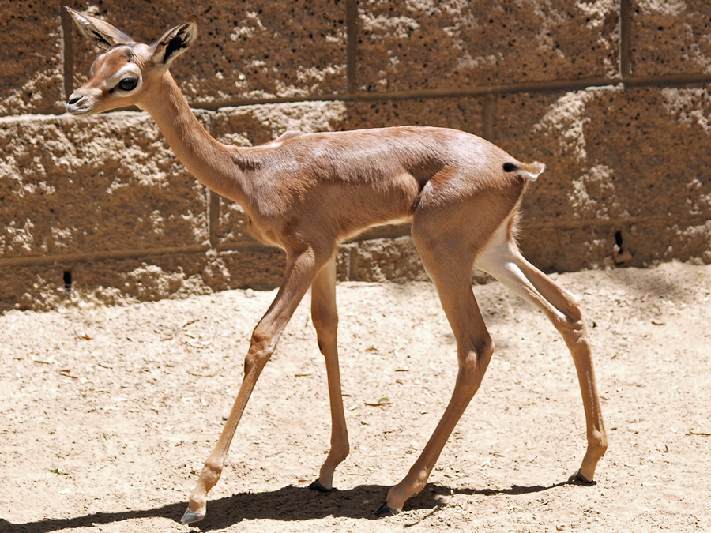
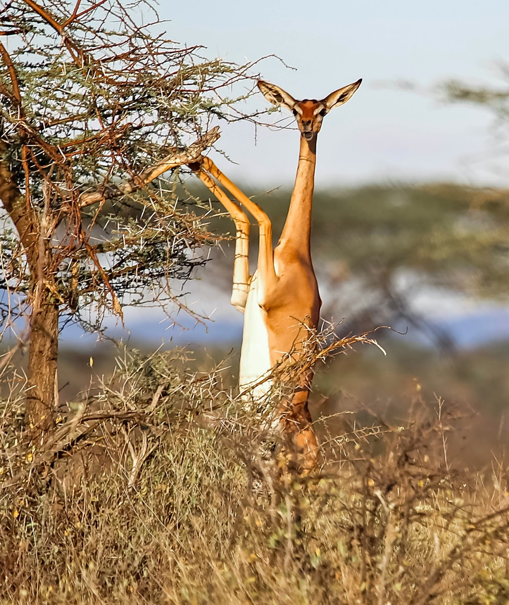
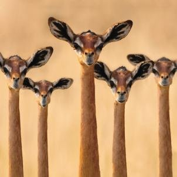

General Information
The Gerenuk is also know as the giraffe gazelle, and is a long-necked antelope that in mainly found in the Horn of Africa and drier parts of East Africa. They live in woodland forests or open plains. The Gerenuk is distinguishable by its long, slender neck and limbs. These animals are about 80-100 inches tall and weighs between 68-115 lbs. Gerenuks have two different types of coloring on their smooth coat: either a reddish brown or lighter flanks that are fawn to buff. The horns on Gerenuks are only present in the males and they are lyre-shaped. Only females have a dark patch on the crown. The Gerenuk is a Brachydont, which means it has low-crowned teeth.
Conservation Efforts
There is an estimated 95,000 Gerenuks remaining in the world. Right now they are found amongst 4 countries. The main predators of Gerenuks are: humans, wild dogs, cheetahs, leopards, lions, and jackals. The problems this species face is that as Human populations expand and grow, they build new settlements and roads that result in a loss of habitats for the Gerenuks and other animals. This effects them in making it more difficult to find food and shelter, and find mates. Gerenuks also have a hard time hiding from predators when their habitats are destroyed. The African WildLife Foundation is working with governments to find solutions to help conserve this animal. The foundation also has a luxury lodge on 5,000 acres of land in Kenya that is protected so the Gerenuks and other wildlife can roam safely, the revenue they gain from tourists is reinvested into this conservation act.
    
Fun Facts
The Gerenuk gets food from trees and the tender leaves branches that are high. Its small nuzzle and long neck requires a need for the animal to stand on its hind legs in order to get food from the high tree branches. The Gerenuk also feeds on shrubs, creepers and vines but primarily eats from the high tree branches. The Gerenuk also has small scent glands underneath the eyes.